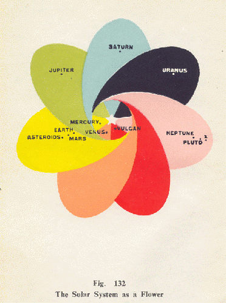

First Principles of Theosophy
by C. Jinarajadasa
The First Principles of Theosophy
by C. Jinarajadasa
---------------------

- ii -
First Principles
Of
Theosophy
By
C. Jinarajadasa, M.A.
~~~
First Edition 1921
Thirteenth Edition 1967
- iii -
FOREWORD
This book is the result of a series of lectures delivered in Chicago in 1909. An attempt was then made to expound Theosophy to large audiences with the help of diagrams. These were prepared and made into slides, and then thrown on to a screen from a lantern. It was found to be a distinct advantage to the audience to look at a diagram, while listening to the lecturer's exposition of his subject.
Directly the series was over, it was my intention to write out the lectures for publication. Plates were at once prepared from the diagrams, and the first three chapters appeared in 1910 in
The Theosophic Messenger
, the organ of the Theosophical Society in America. That it has taken me eleven years to complete the remaining twelve chapters will be an indication how full a life a Theosophical worker leads with lectures, correspondence, literary work and travel. I do not, however, ...
- v -
regret the delay in completing the work, as the intervening years have deepened my understanding of Theosophy, and so enabled me to give a fuller exposition of my subject.
Many Theosophists have heartily cooperated with me in the plan of this book, and of them all I owe most thanks to Mr. Ralph E. Packard, who in Chicago in 1909 did the original diagrams for the lantern slides. Half the diagrams in this book were prepared by him. When his day's work as a draughtsman in a railway office was over, he spent night after night for three months working at diagrams from my design. I owe to Mr. Claude F. Bragdon two diagrams, Figs. 67 and 78. The pictures of the Platonic Solids in Figs. 81 and 124 are from beautiful models made by Mr. G. E. Hemus of Auckland, and carefully photographed for me by Mr. Ragnar Lindberg of the same city. Figs. 87, 88 and 123 were drawn by Mr. E. Warner of Sydney.
I am under obligation to various publicaions for certain of the diagrams: Fig. 5 to T. W. Galloway's "First Course in Zoology"; Figs. 14 and 15 to Knowledge and Scientific News; Figs. 21-24 to Scott-Elliot's "Atlantis" (the ...
- vi -
maps for which, however, were drawn by C. W. Leadbeater after consulting occult records); Fig. 48 to Hutchinson's "Splendor of the Heavens"; Fig. 94 to the publishers of Ravi Varma's pictures of Indian Mythology; and Fig. 125 to " Mineralogia Generale" by L. Bombicci," (Milan). Subsequent acknowl- edgements are given at the end of the book.
I must thank the Theosophical Society in America for giving me, through Dr. Weller Van Hook, General Secretary of that National Society from 1907 to 1911, sixty-five of the plates used in the book, originally prepared for publication in The Theosophic Messenger.
None of the diagrams drawn from my designs is copyright, and any of them can be reprinted as it is, or modified as deemed best, by anyone.
C. J.
June, 1921
- vii -
FOREWORD TO THE FIFTH EDITION
I have revised every chapter so as to make my thought more clear and precise. With the exception of the new Chapter XII, the work has not been changed, except for minor emendations and additions.
Chapter XII, on "Nature's Message of Beauty", will, I believe, complete the survey of evolutionary processes outlined in the book. Science today, in England especially, is ready to accept the postulate of a "pure mathematician" whose thought makes the fabric of the universe. Yet even this forward step halts short of the reality.
Until the conception of nature, as a revealer of Beauty, as well as of Law, is added to Science, the full truth concerning the operations of nature cannot be realized. I hope the new ...
- ix -
Chapter will aid the. student to sense a little of the mystery of Beauty in the cosmic processes.
C. J.
Coimbra, Portugal
February 24, 1938
In the Sixth Edition two new colored plates (Figs. 110a and 110b) were added.
The Publishers
- x -